PayPal Standard
Important
此此外掛目前已棄用，並由 PayPal Commerce 外掛所取代。
PayPal Standard 是在線上安全地接受信用卡與 PayPal 付款最簡單的方式。
若要設定 PayPal Standard 外掛，請前往 設定 → 付款方式。接著在付款方式列表中找到 PayPal Standard 付款方式：
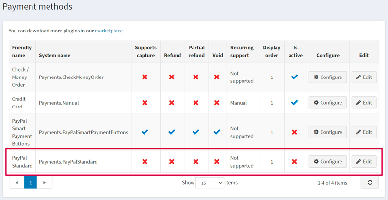
啟用付款方式、編輯名稱與顯示順序
您可以編輯付款方式的名稱（該名稱將會在前台網站顯示給顧客）或其顯示順序。若要進行此操作，請在付款方式列表頁面中，點擊該外掛所在列的 Edit 按鈕。您將可以輸入 Friendly name（友善名稱）與 Display order（顯示順序）。在這一列中，您也可以透過 Is active 欄位來啟用或停用此外掛。點擊 Update 按鈕，您的變更即會儲存。
設定付款方式
若要使用 PayPal Standard 外掛作為付款方式，請遵循以下步驟：
在 www.paypal.com 註冊一個企業帳戶。請點選連結 https://www.paypal.com/bizsignup/，然後填寫關於您個人及企業的資訊：

Note
如果您已經擁有帳戶，系統將會導向至授權頁面。

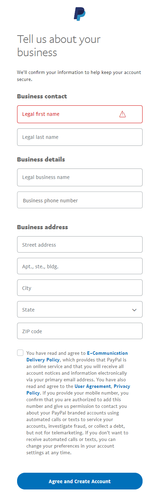
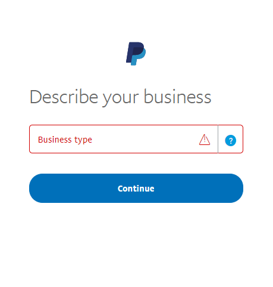

在上方導覽列中，點選 Settings 圖示 。
在左側面板中選擇 Website payments，並在 Website preferences 這一行點選 Update。
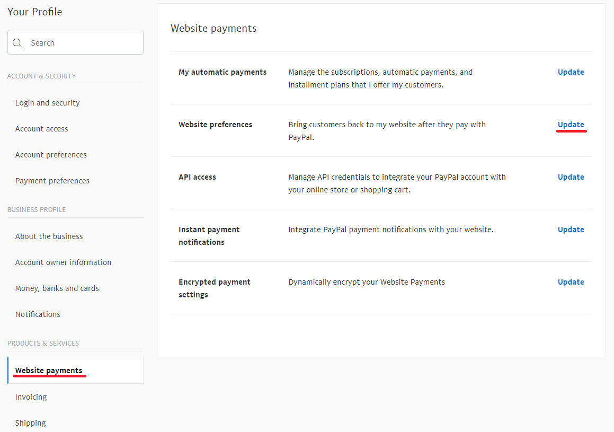
在 Auto return for website payments 區段中，將開關設為 On。在 Return URL 欄位中，輸入您的網站 URL，該網址將會在顧客付款後接收由 PayPal 發送的交易 ID。以我們的範例來說，網址為
http://localhost:15536/Plugins/PaymentPayPalStandard/PDTHandler，但請別忘了將 localhost 替換成您實際的網站 URL。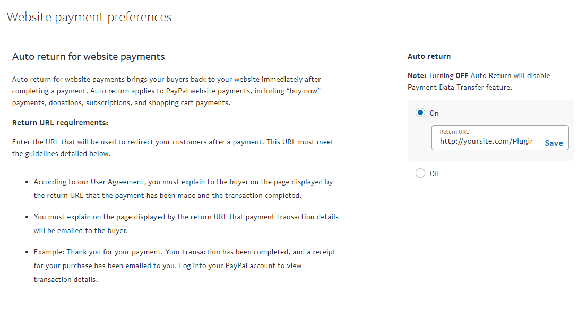
在 Payment data transfer 區段中，將開關設為 On 並複製 Identity Token。
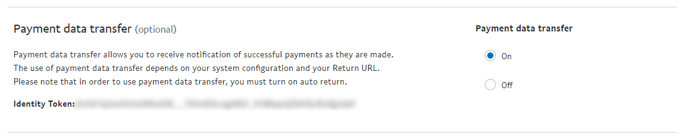
若要在 nopCommerce 的管理後台設定此外掛，請前往 後台 → 設定 → 付款方式。在 PayPal Standard 這一行，點選 Configure。
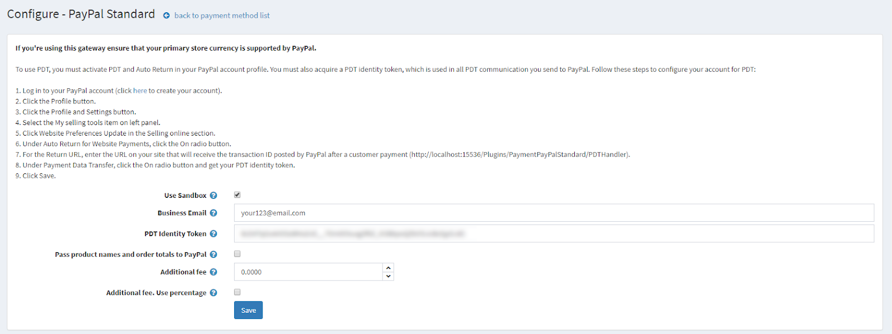
在 Business Email 欄位中，輸入您在 paypal.com 註冊企業帳戶時所指定的電子郵件地址。
在 PDT Identity Token 欄位中，貼上第 5 點所複製的 Identity Token。
點選 Save。
若要啟用 IPN (即時付款通知)：
在左側面板選擇 Notifications，並點選 Instant payment notifications 這一行的 Update。
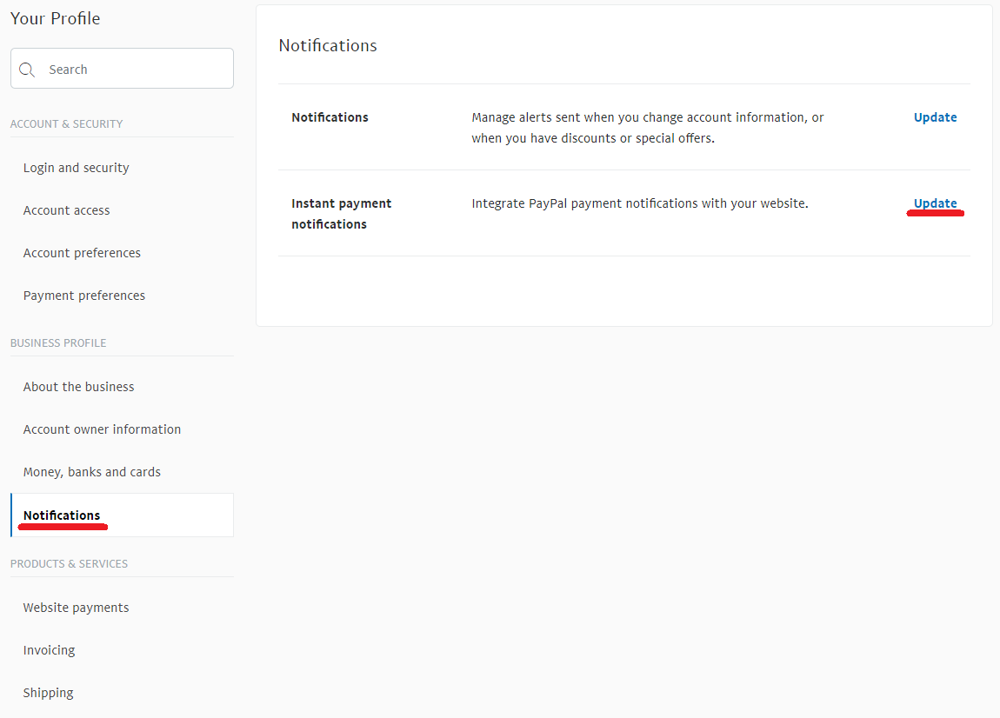
閱讀關於 IPN 的資訊，並點選 Choose IPN Settings。
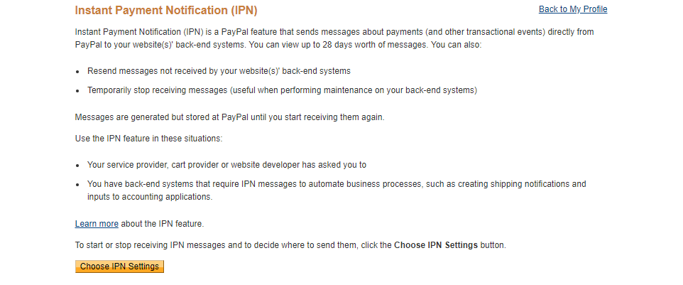
選擇 Receive IPN messages (Enabled)。在 Notification URL 欄位中，輸入您的 IPN 處理程式 URL。
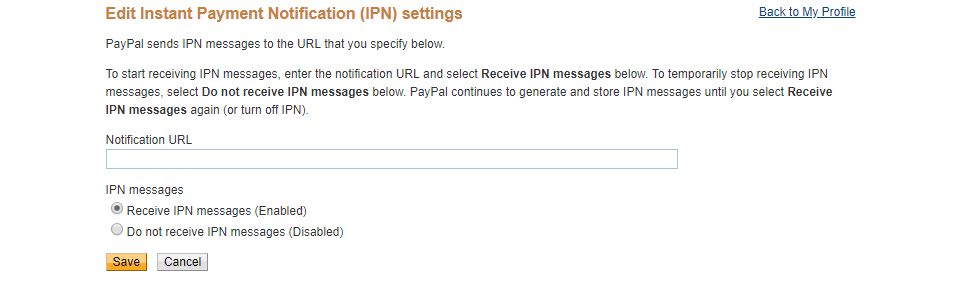
點選 Save。您應該會收到訊息，告知您已成功啟用 IPN。
Note
即時付款通知 (IPN) 是一項 PayPal 訊息服務，會在交易發生變動時傳送通知。一旦整合 IPN，賣家即可自動化其後勤作業，無需等待款項入帳即可觸發訂單履行流程。
限制商店與顧客角色
您可以將任何付款方式限制在特定商店與顧客角色中使用。這代表該付款方式將僅適用於特定的商店或顧客角色。您可以從外掛清單頁面執行此操作。
前往 設定 → 本地外掛。找到您想要限制的外掛。在本範例中，它是 PayPal Standard。若要更快速找到它，請使用頁面頂端的搜尋面板，透過「付款方式」選項，以 外掛名稱 或 群組 進行搜尋。
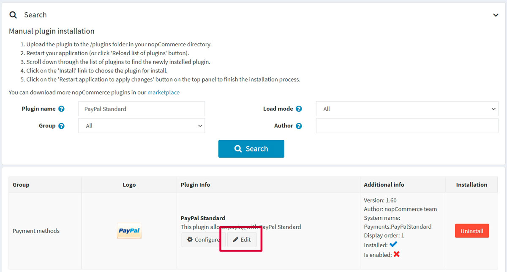
點擊 編輯 按鈕，系統會顯示如下的編輯外掛詳情視窗：
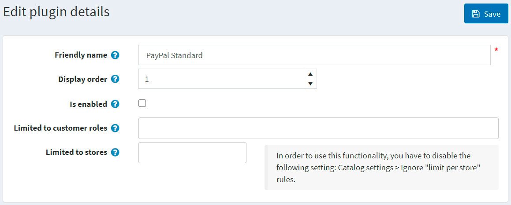
您可以設定下列限制：
已知問題
錯誤：目前似乎出了點問題 (PayPal)
如果您看到錯誤訊息「目前似乎出了點問題。請稍後再試 (Things don't appear to be working at the moment. Please try again later)」
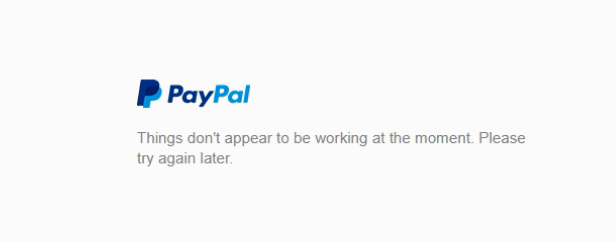
此錯誤是由您 PayPal 帳戶內的設定所導致。
步驟 1：在左側邊欄的「產品與服務 (Products & Services)」下方，點選「網站付款 (Website Payments)」。
步驟 2：點選「網站偏好設定 (Website Preferences)」區塊旁邊的「更新 (Update)」。
步驟 3：向下捲動至「加密網站付款 (Encrypted Website Payments)」區塊，將右側選取為「關閉 (Off)」，然後儲存您的變更。
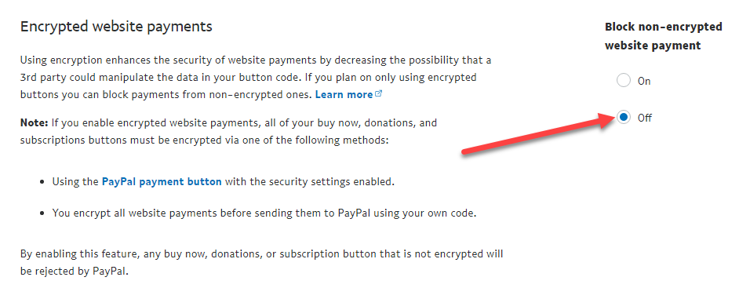
儲存變更後，您可以回到您的網站並再次嘗試該按鈕或表單，它們應該就能正常運作了。